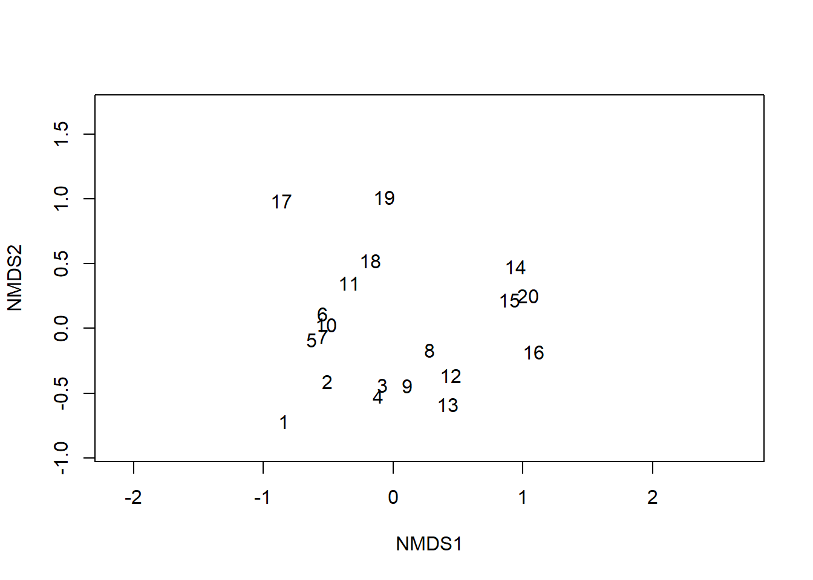

# Install core data-science packages from CRAN
install.packages("tidyverse") # includes ggplot2, dplyr, tidyr, readr, purrr, etc.
install.packages("vegan", repos = "https://cloud.r-project.org")
install.packages("sf", repos = "https://cloud.r-project.org")
install.packages("lubridate")
install.packages("stringr")
install.packages("purrr")Key R Packages
Key R Packages for Data Science
R’s power lies in its rich package ecosystem. In this lesson you will learn how to:
- Install and load packages
- Navigate the tidyverse meta-package and its components
- Use vegan for ecological analyses
- Explore several other essential packages
All examples assume you have installed and loaded the packages as shown below.
1. Installing Packages
Tip: Run these commands interactively in your console. To avoid mirror prompts, specify repos = "https://cloud.r-project.org".
2. Loading Packages
Use
library(pkg, quietly = TRUE)to suppress startup messages.conflicts()shows any function name clashes.
3. The tidyverse Ecosystem
tidyverse is a coherent suite by Hadley Wickham & team. It shares a uniform syntax and philosophy:
3.1 dplyr
A grammar for data manipulation:
filter(df, condition)select(df, cols)mutate(df, new = expr)arrange(df, cols)summarise(df, agg = func(col))
# Example: summarise mtcars by cyl
df <- as_tibble(mtcars)
df %>%
group_by(cyl) %>%
summarise(
avg_mpg = mean(mpg),
max_hp = max(hp),
n = n()
)# A tibble: 3 × 4
cyl avg_mpg max_hp n
<dbl> <dbl> <dbl> <int>
1 4 26.7 113 11
2 6 19.7 175 7
3 8 15.1 335 143.2 ggplot2
A layered grammar of graphics:
ggplot(data, aes(x, y, ...))geom_point(),geom_line(),geom_histogram()labs(),theme_*()
ggplot(df, aes(x = factor(cyl), y = mpg)) +
geom_col(fill = "steelblue") +
labs(
title = "MPG by Cylinder Count",
x = "Cylinders",
y = "MPG"
)
3.3 tidyr
Tools to tidy data:
pivot_longer(df, cols, names_to, values_to)pivot_wider(df, names_from, values_from)
# Convert mtcars summary to long form
long_df <- df %>%
pivot_longer(
cols = c(mpg, hp),
names_to = "metric",
values_to = "value"
)
head(long_df)# A tibble: 6 × 11
cyl disp drat wt qsec vs am gear carb metric value
<dbl> <dbl> <dbl> <dbl> <dbl> <dbl> <dbl> <dbl> <dbl> <chr> <dbl>
1 6 160 3.9 2.62 16.5 0 1 4 4 mpg 21
2 6 160 3.9 2.62 16.5 0 1 4 4 hp 110
3 6 160 3.9 2.88 17.0 0 1 4 4 mpg 21
4 6 160 3.9 2.88 17.0 0 1 4 4 hp 110
5 4 108 3.85 2.32 18.6 1 1 4 1 mpg 22.8
6 4 108 3.85 2.32 18.6 1 1 4 1 hp 93 3.4 readr
Fast data import:
read_csv("file.csv")read_delim("file.txt", delim = "\t")
# Example: df2 <- read_csv("data/mydata.csv")3.5 purrr
Functional programming:
map(df, f)appliesfto each columnmap_df(list_of_dfs, bind_rows)combines multiple data frames
# Example: compute mean of each numeric column
map_dbl(df, ~ if(is.numeric(.x)) mean(.x) else NA_real_) mpg cyl disp hp drat wt qsec
20.090625 6.187500 230.721875 146.687500 3.596563 3.217250 17.848750
vs am gear carb
0.437500 0.406250 3.687500 2.812500 4. The vegan Package
Specialised for community ecology:
diversity(x, index = "shannon")– Shannon diversity indexmetaMDS(x, distance = "bray", k = 2)– non-metric MDS ordinationrda(x, y)– redundancy analysis (constrained ordination)
# Example using dune dataset
data(dune)
div_shannon <- diversity(dune, index = "shannon")
meta <- metaMDS(dune, distance = "bray", k = 2)Run 0 stress 0.1192678
Run 1 stress 0.1183186
... New best solution
... Procrustes: rmse 0.02027068 max resid 0.0649625
Run 2 stress 0.1183186
... Procrustes: rmse 3.628051e-05 max resid 0.0001072331
... Similar to previous best
Run 3 stress 0.1183186
... Procrustes: rmse 4.962724e-06 max resid 1.437127e-05
... Similar to previous best
Run 4 stress 0.1192678
Run 5 stress 0.1192678
Run 6 stress 0.1192678
Run 7 stress 0.1183186
... Procrustes: rmse 1.058477e-05 max resid 3.339494e-05
... Similar to previous best
Run 8 stress 0.1192678
Run 9 stress 0.1192678
Run 10 stress 0.1812932
Run 11 stress 0.2003482
Run 12 stress 0.1183186
... Procrustes: rmse 2.073742e-06 max resid 6.065277e-06
... Similar to previous best
Run 13 stress 0.1192679
Run 14 stress 0.1808911
Run 15 stress 0.1183186
... Procrustes: rmse 3.75847e-06 max resid 6.208995e-06
... Similar to previous best
Run 16 stress 0.1809577
Run 17 stress 0.2045511
Run 18 stress 0.1183186
... Procrustes: rmse 9.026092e-06 max resid 2.757918e-05
... Similar to previous best
Run 19 stress 0.1192679
Run 20 stress 0.1183186
... Procrustes: rmse 5.615075e-06 max resid 1.669653e-05
... Similar to previous best
*** Best solution repeated 7 timesplot(meta, type = "n"); text(meta, display = "sites")5. Other Essential Packages
sf (Simple Features)
Handles spatial vector data:
# sf::st_read("path/to/shapefile.shp")lubridate
Simplifies date-time work:
ymd("2022-01-15"),hms("12:30:45")today(),now(),year(),month(),day()
d <- ymd("2025-05-14")
year(d); month(d); wday(d, label = TRUE)[1] 2025[1] 5[1] Wed
Levels: Sun < Mon < Tue < Wed < Thu < Fri < Satstringr
Consistent string manipulation:
str_detect(string, pattern)str_replace(string, pattern, replacement)
words <- c("data", "science", "analysis")
str_detect(words, "a") # TRUE, TRUE, FALSE[1] TRUE FALSE TRUEpurrr
(see above) for advanced iteration.
By the end of this lesson you should understand the core tidyverse packages, how to manipulate, visualise, and model data, and where to go next for specialised analyses. Proceed to the Error Bypass Atlas or return to Introduction to R.